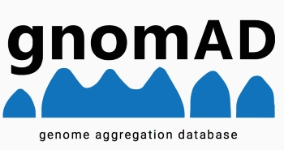

NCBI
El National Center for Biotechnology Information (NCBI) es una base de datos integral que proporciona acceso a información biomédica y genómica. Incluye herramientas para análisis de secuencias, búsqueda de literatura científica y recursos de bioinformática.
Ver más
EMBL
El European Molecular Biology Laboratory (EMBL) es una de las bases de datos de secuencias nucleotídicas más importantes del mundo. Forma parte de la colaboración internacional de bases de datos de secuencias junto con NCBI y DDBJ.
Ver másDDBJ
DNA Data Bank of Japan (DDBJ) es la base de datos nacional japonesa de secuencias de ADN. Colabora estrechamente con NCBI y EMBL para mantener un repositorio global de información genética accesible para la comunidad científica.
Ver más
ClinGen
Clinical Genome Resource (ClinGen) es una iniciativa financiada por los NIH que tiene como objetivo construir una base de conocimientos autoritativa para respaldar la interpretación clínica de variantes genómicas para su uso en medicina de precisión.
Ver más
OMIM
Online Mendelian Inheritance in Man (OMIM) es una base de datos completa de genes humanos y trastornos genéticos. Proporciona información detallada sobre la relación entre fenotipos y genotipos en enfermedades hereditarias.
Ver más
PDB
Protein Data Bank (PDB) es la base de datos mundial de información sobre estructuras 3D de proteínas, ácidos nucleicos y complejos moleculares. Es fundamental para la investigación en biología estructural y diseño de fármacos.
Ver más
HGMD
Human Gene Mutation Database (HGMD) es una base de datos integral de mutaciones genéticas humanas publicadas que causan enfermedades hereditarias.
Ver más
ClinPGx
Clinical pharmacogenomic (ClinPGx) es una base de datos farmacogenómica que integra información sobre cómo la variación genética afecta la respuesta a los medicamentos. Integra los proyectos PharmGKB, CPIC y PharmCAT.
Ver más
gnomAD
Genome Aggregation Database (gnomAD) es una base de datos que contiene información sobre variantes genéticas de una amplia población humana. Proporciona frecuencias alélicas y datos de calidad para la interpretación de variantes genéticas.
Ver más
GeneCards
GeneCards: The Human Gene Database es una base de datos integral y autorizada de genes humanos que proporciona información concisa sobre todos los genes humanos anotados y predichos. Integra información de más de 150 fuentes de datos web.
Ver más